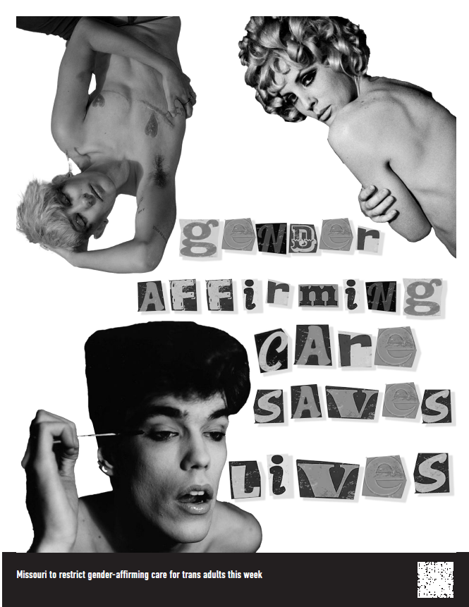

<!doctype html>
<html class="no-js" lang="en">

<head>
  <meta charset="utf-8">
  <title>Responsive Layouts</title>
  <meta name="description" content="This site will serve as the hub for many sub responsive layouts">
  <meta name="viewport" content="width=device-width, initial-scale=1">

  <meta property="og:title" content="">
  <meta property="og:type" content="">
  <meta property="og:url" content="">
  <meta property="og:image" content="">

  <link rel="manifest" href="site.webmanifest">
  <link rel="apple-touch-icon" href="icon.png">
  <!-- Place favicon.ico in the root directory -->

  <link rel="stylesheet" href="css/normalize.css">
  <link rel="stylesheet" href="css/main.css">

  <meta name="theme-color" content="#fafafa">
</head>

</html>


<!DOCTYPE html>
<html lang="en">
<head>
    <meta charset="UTF-8">
    <meta name="viewport" content="width=device-width, initial-scale=1.0">
    <style>
        .container {
            text-align: center;
            max-width: 800px;
            margin: 0 auto;
        }

        .title {
            font-size: 24px;
            margin-top: 20px;
        }

        .row {
            display: flex;
            flex-wrap: wrap;
            justify-content: space-between;
        }

        .image {
            flex: 0 0 48%; 
            margin: 10px;
            text-align: center;
        }

        .image img {
            width: 100%;
            max-width: 100%;
            height: auto;
        }

        .description {
            flex: 0 0 48%; 
            margin: 10px;
            text-align: center;
        }
    </style>
    <title>Image Gallery</title>
</head>
<body>
    <div class="container">
        <div class="title">
            <h1>Response Images</h1>
        </div>
        <div class="row">
            <div class="image">
                
            </div>
            <div class="description">
                <p>As a response to this alarming issue, I embarked on a journey of artistic expression, seeking to convey the pain and hopelessness these children endure. Using the powerful medium of Photoshop.In a world that cherishes progress and development, it's disheartening to confront the shadows lurking within our societies. This article delves into the dark reality of child labor in the tobacco industry, a topic often overlooked or conveniently hidden from the public eye. It sheds light on the plight of countless young souls forced to toil in tobacco fields, their dreams snuffed out like a cigarette's ember.</p>
            </div>
            <div class="image">
                
            </div>
            <div class="description">
                <p>This compelling article illuminates the extraordinary voices of Swiss elderly women who are taking a stand against climate change, asserting that this is fundamentally a human rights issue. Their resilience and commitment to protecting the planet for future generations are nothing short of inspiring. As a response to the courage and wisdom of these women, I sought to express my admiration and support through the medium of art. With each brushstroke and pixel, I crafted a visual representation of their unwavering determination. The art speaks to the intertwined nature of climate change and human rights, as these women, despite their age, recognize that the urgency of this global crisis transcends generations.</p>
            </div>
            <div class="image">
                
            </div>
            <div class="description">
                <p>The article that I chose talked about the remarkable stories of the descendants of those who were once enslaved by Lee, now converging at his home in Northern Virginia, seeking to reclaim their roots and history.  The piece portrays the contrasting emotions of pain, hope, and unity.</p>
            </div>
            <div class="image">
                
            </div>
            <div class="description">
                <p>The article resonates with the unwavering belief that trans equality and access to healthcare are indisputable human rights. It speaks to the essential need for individuals to be recognized, respected, and provided with equal opportunities and care, regardless of their gender identity. It's a visual declaration of solidarity, urging society to embrace and support the trans community, affirming that their rights are not a matter of debate but an inherent and undeniable part of the human experience.</p>
            </div>
        </div>
    </div>
</body>
</html>
